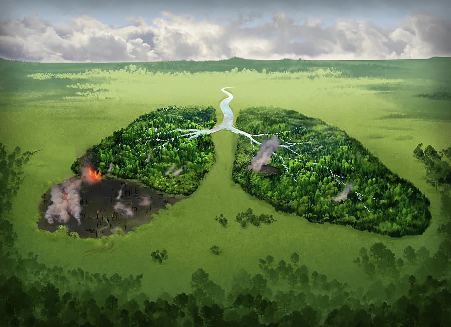

Consecuencias
Una de las principales consecuencias de la deforestación es la pérdida de la biodiversidad. El impacto de la deforestación en el ambiente es profundo y en algunos casos irreversible. Un bosque es un ecosistema y, por lo tanto, al destruirlo son expulsadas cientos o miles de especies que pertenecían a dicho ecosistema. Algunas de ellas continúan desarrollándose en ecosistemas cercanos pero debido a la magnitud de la deforestación en la actualidad, muchas especies pierden sus ecosistemas específicos y se extinguen.
